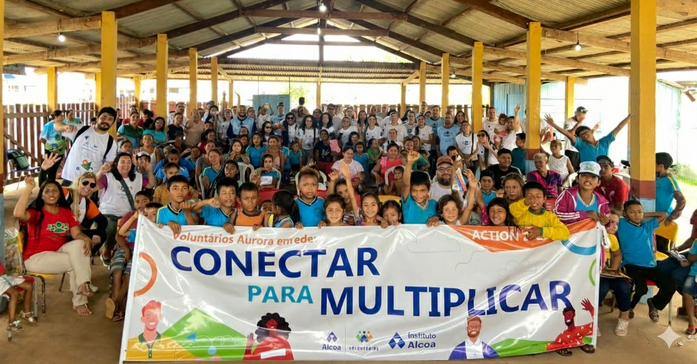

Bem-vindo à ONG Aurora
Trabalhamos para transformar a vida de pessoas e comunidades através de projetos sociais.
A Aurora é uma ONG dedicada a acolher e apoiar crianças em situação de vulnerabilidade social, oferecendo acompanhamento, educação, atividades culturais e suporte emocional. Nosso objetivo é garantir um espaço seguro e cheio de oportunidades, onde cada criança possa se desenvolver plenamente.
Atuamos em diversas frentes para transformar a vida dessas crianças e de suas famílias, promovendo projetos de inclusão, aprendizado e fortalecimento da comunidade. Valorizamos o respeito, a diversidade e a construção de relações baseadas em confiança e empatia.
Nossa missão: criar um ambiente acolhedor, seguro e estimulante, contribuindo para o crescimento integral das crianças e adolescentes assistidos.
Nossa visão: ser referência em acolhimento e desenvolvimento infantil, construindo um legado de cuidado, aprendizado e oportunidades para as futuras gerações.
Para atingir nossos objetivos, seguimos princípios fundamentais: respeitar e ouvir cada criança, promover a inclusão social, estimular a educação e a cultura, e desenvolver habilidades essenciais para a vida. Buscamos diariamente fortalecer nossa equipe e parcerias, garantindo que cada ação gere impacto positivo e sustentável.
Nossos projetos focam em educação, atividades culturais, suporte psicológico e social, e criação de oportunidades que capacitam crianças e adolescentes para um futuro melhor.